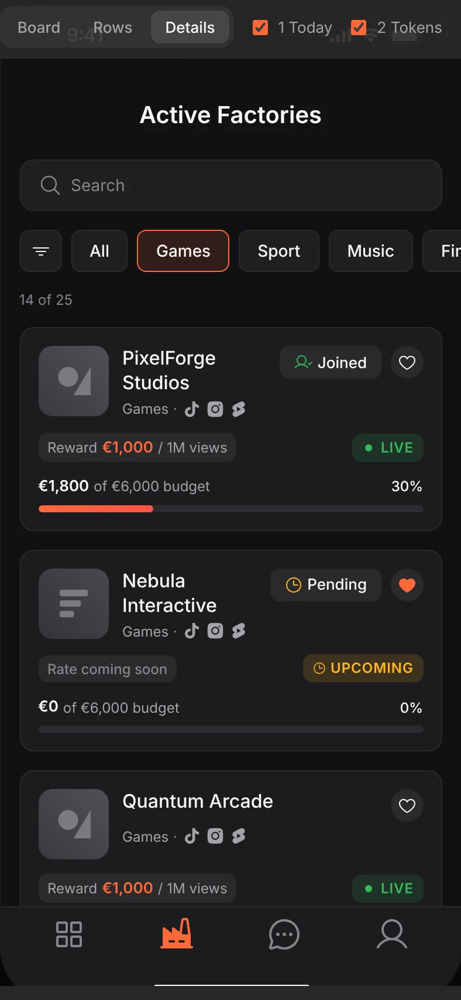
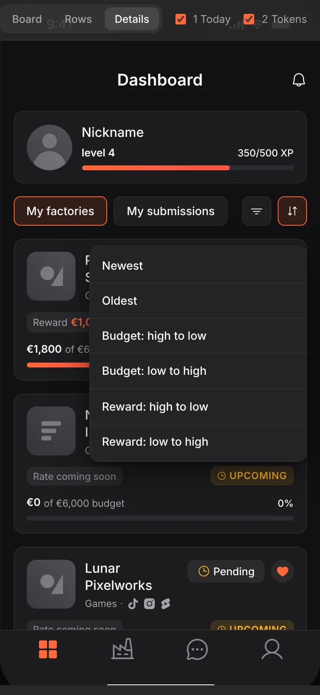
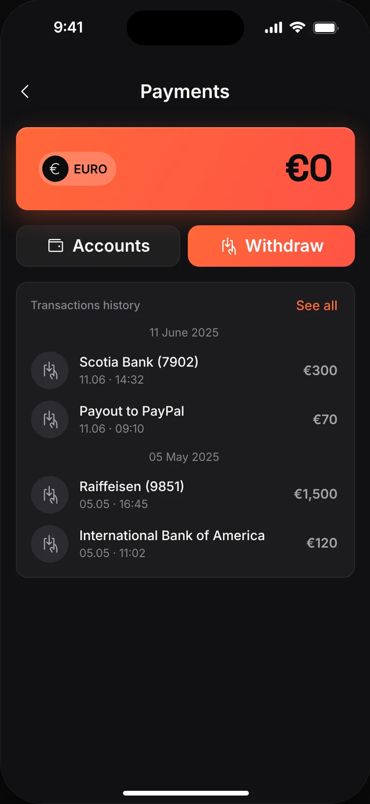
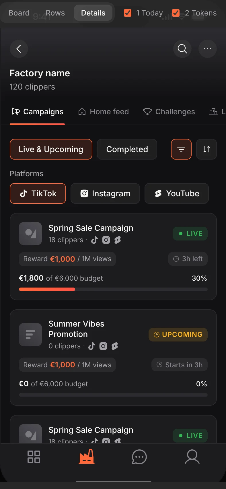
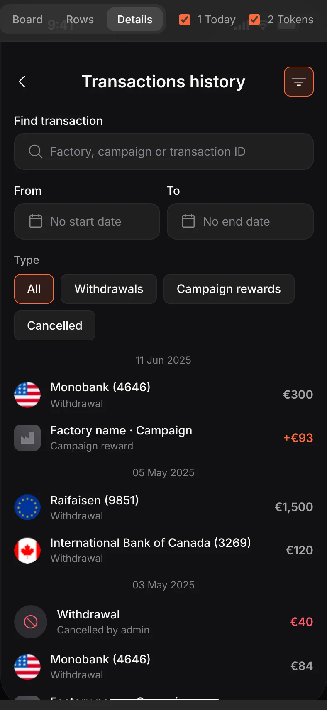
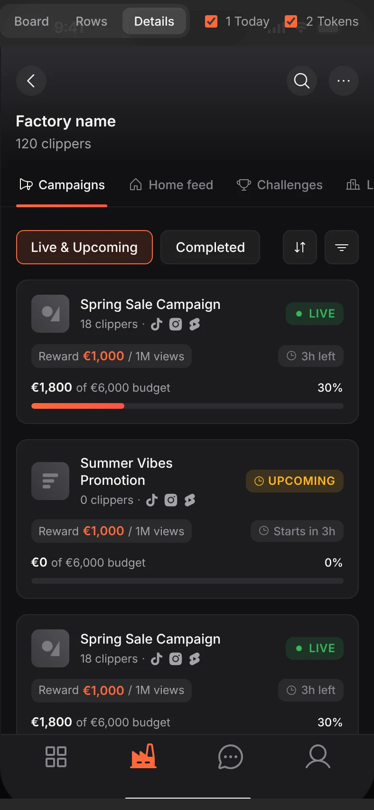
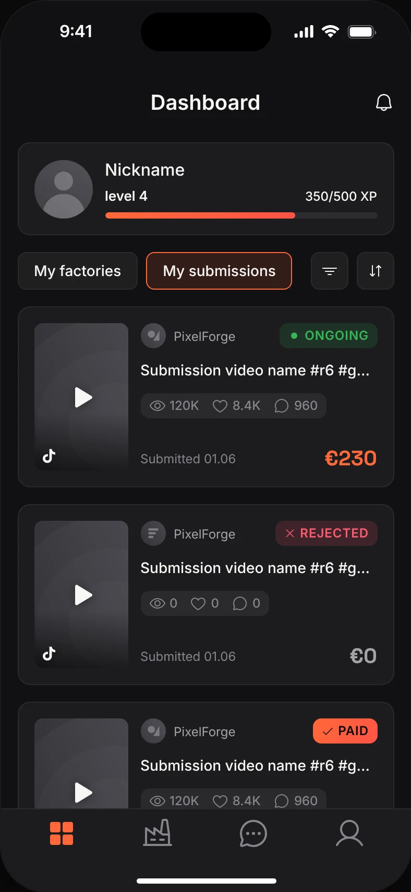
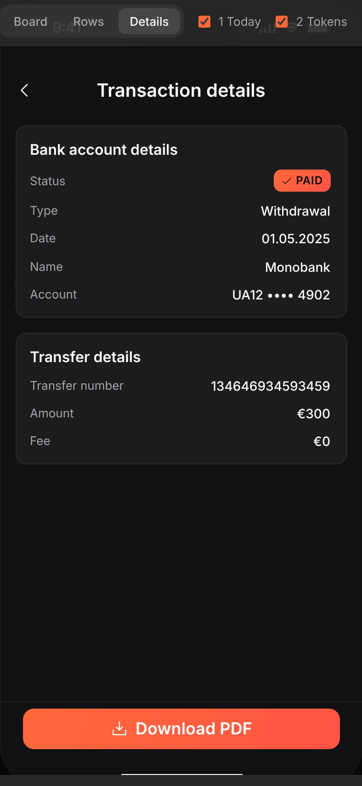
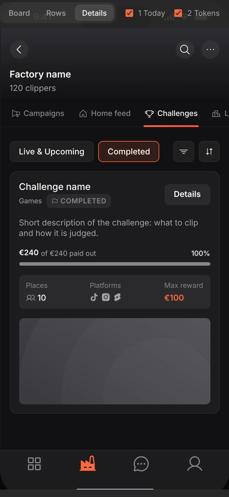
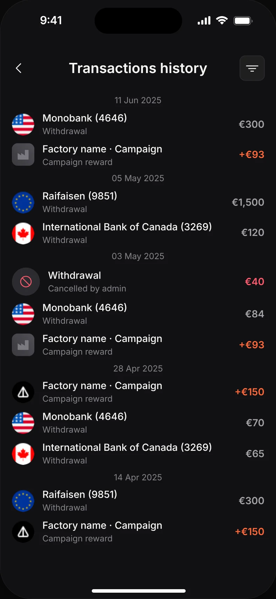

What changed and whyRelease steps, then seven decisions behind the kit, each next to a mockup crop. Visual only: screens, flows, navigation and copy stay as they are.
Why · Three versions#
Why
Three versions, two release steps
The Mockups page shows all 184 screens of the Original Screens page three ways: as today, with tokens only, and the full kit.
1TodayExported unchanged from the page Original Screens.
2Iteration 1 · tokensSame layout, components and copy. Colour variables and fonts point at v2 tokens (mapping on Foundations).
3Target · full kitRebuilt from kit components, with the money, status and copy rules applied.
What changes between the versions, and why
1 → 2 · Tokens: what changesOnly the colour variables and the two font roles are re-pointed to the v2 tokens (each colour on Foundations). Layout, components, copy and flows stay exactly as today.Why ship this firstThe smallest release that already looks like the brand. For developers it is a theme swap, and the token layer is needed for the kit anyway. Low UX risk, and the palette is checked on real screens before the kit is built on it.
2 → 3 · Full kit: what changesEvery element is replaced by its kit component (buttons, chips, fields, cards, rows, dialogs, navigation), and the rules are applied: orange money, CAPS lifecycle chips, countdown tags, relative dates, 4px spacing, Phosphor icons. Same screens, same flows, same copy (typos fixed).Why it is the targetOne source for each element instead of the same thing drawn several ways across 184 screens. States (pressed, disabled, error, empty) come with the component. New screens are assembled from the kit, and contrast is fixed where the rules require it.
What never changesUX and flows, the set of screens and their order, navigation, and what each screen says. Renamings such as Locked → Private are optional copy, not a flow change. Nothing goes live until the client approves; version 1 stays the reference until then.
Why · Colour palette#
Colour palette
One palette for the app and the website.
- The app moves to the cool greys of the live site, so a clipper going from the web to the app sees one product.
- Two near-identical oranges become one.
- The single blue "info" colour goes; info uses the brand orange.
- Text is a soft off-white, and meta grey moves up one step so it passes 4.5:1 contrast.
- Every colour is a token, so a palette change is a one-place change.
bgcardicon bgorange 1orange 2info bluetextmeta
Warm, flat greys. Two oranges side by side. One blue.bg/basebg/surfacebg/tintbrandbrand tinttextmeta
The original cool greys. One orange. No blue.Why · Colour semantics#
Colour semantics
Each colour gets one job.
- One status logic for every entity: grey inactive, amber waiting, green live, red mistake. PAID is the only filled chip.
- Lifecycle is a CAPS chip; membership (Joined, Pending) is a tag with an icon. Different questions, different shapes.
- Orange money means "yours". Totals stay white, zero is grey, cancelled is red with a strikethrough.
- Unread counts are orange, not red, so a badge does not read as an error.


Why · Depth#
Depth
Four fill steps instead of one card colour.
- Screen, containers, elements, overlays: each step is one shade lighter, so a dropdown can never match what is under it.
- Chips, buttons and selects use a see-through white, so one component works on any surface.
- Only overlays cast a shadow.


Why · Typography#
Typography
Inter for UI, Space Grotesk for display and money.
- SF Pro is Apple's font. Inter is free and renders the same on iOS, Android and the web.
- Space Grotesk is the brand’s display face; the app uses it for headlines and big figures.
- One named scale replaces near-equal sizes (13, 14, 15 for the same meta text). Nothing goes below 12px.


Why · Spacing and shape#
Spacing and shape
A 4px grid and three radii.
- Gaps of 10, 13, 15 and 18 sit next to each other today. One grid replaces them.
- Radius 8 for chips and small buttons, 12 for fields, cards and large buttons, 16 for sheets.
- Borders sit inside, so a chip with and without one is the same height.
- Touch targets stay 44px even where the visible box is smaller.




Why · Components and icons#
Components and icons
Each thing is drawn once, with its states.
- 120 components built from the tokens. Today cards, chips and tags are redrawn by hand on each screen, so they drift.
- Three button types in two sizes, with pressed and disabled states.
- One icon set, Phosphor, with a Fill variant for active states, so every icon shares one stroke.








Why · Copy formats#
Copy formats
One format for money, dates and countdowns.
- Money as €1,000, never 1000€ or $. Rates as "€2.40 / 1M views".
- Dates relative up to 7 days, then 12.10. Countdowns are tags: "3h left", "Ended 12.10".
- Two renamings, copy only: Locked to Private, On review to In review.

